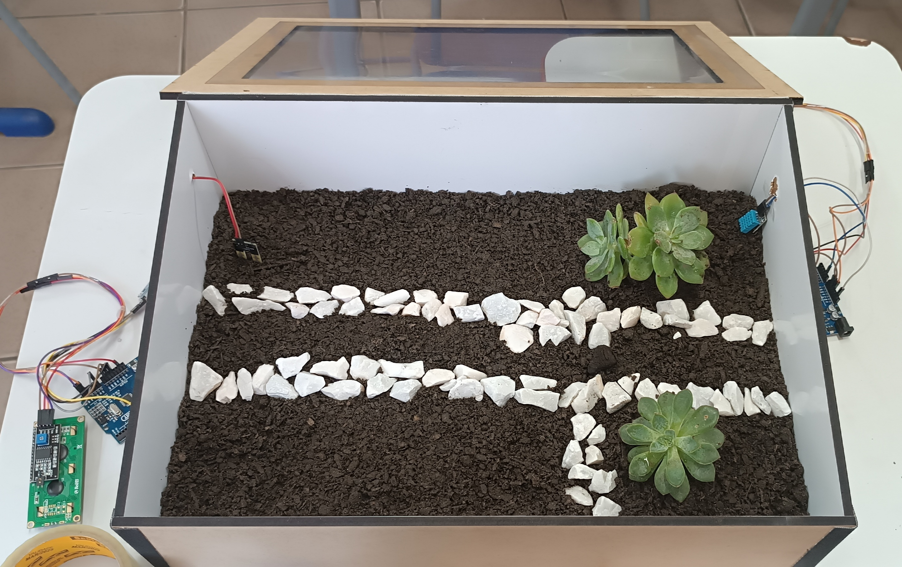

MONITORAMENTO DA ESTUFA

INTRODUÇÃO
Nosso grupo escolheu para o trabalho utilizar dois sensores, de umidade e temperatura, e para isso resolvemos criar uma estufa que utiliza ambos, monitorando os valores de umidade e temperatura da terra.
CRIAÇÃO
Materiais utilizados:
.Madeira MDF
.PVC
.Adesivo
.Tiras de Couro
.Super Cola
.Pedras de jardim (branca)
.Terra adubada
.Plantas
BENEFICIOS DO PROJETO
Nosso projeto ajuda no monitoramento do cultivo em uma estufa, realizando processos automaticos que seriam necessarios serem realizados manualmente pelo cultivador.
PROCESSO DE CRIAÇÃO
criamos as peças por um programa de ediçao (CorelDRAW) pelo computador, depois das peças criadas cortamos com uma maquina a laser e fizemos uma adesivagem lateral de cada peça, colamos cada parte, cortamos o PVC e colamos a tampa da estufa sustentada por tiras de couro para melhor manuseio, por ultimo fizemos furos laterais para instalar os sensores e furos adicionais para a entrada de ar na estufa.